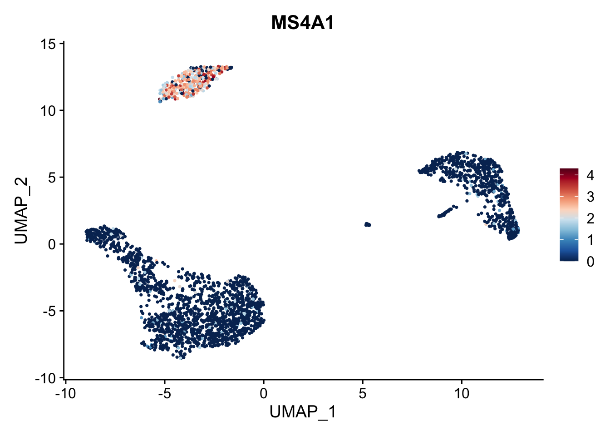
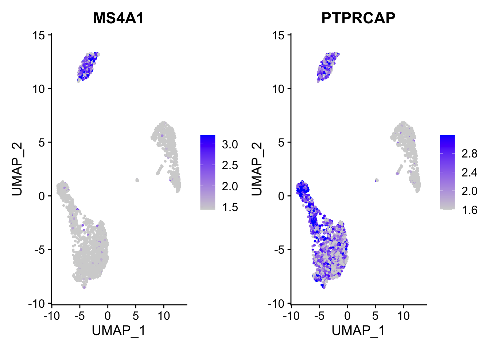
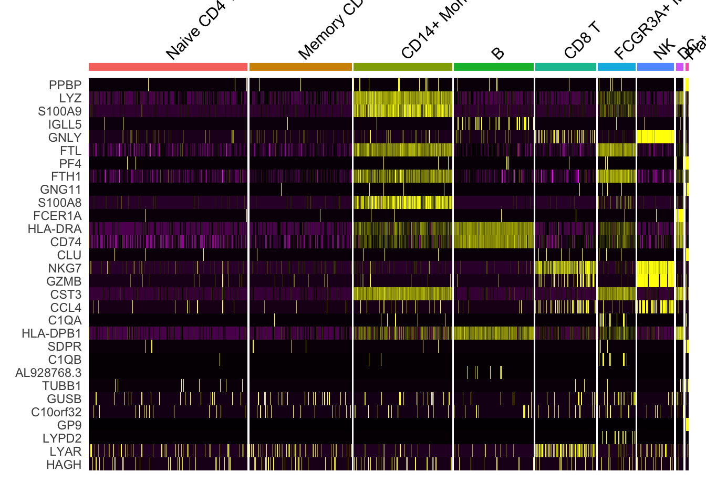

```{r}
#| eval: false
devtools::install_github('satijalab/seurat-data')
SeuratData::InstallData("pbmc3k")
```Seurat中的数据可视化方法
原文：Data visualization methods in Seurat
原文发布日期：2023-10-31
We’ll demonstrate visualization techniques in Seurat using our previously computed Seurat object from the 2,700 PBMC tutorial. You can download this dataset from SeuratData。官方教程是通过SeuratData包的InstallData函数来下载案例数据，可能需要开启全局代理才能下载：
```{r}
#| eval: false
library(SeuratData)
pbmc3k.final <- LoadData("pbmc3k", type = "pbmc3k.final")
pbmc3k.final$groups <- sample(c("group1",
"group2"),
size = ncol(pbmc3k.final),
replace = TRUE)
pbmc3k.final
```这里我将下载下来的数据保存起来：
```{r}
#| eval: false
saveRDS(pbmc3k.final, file = "data/seurat_official/pbmc3k.final.rds")
```后面我们直接从本地读取这个Seurat对象：
pbmc3k.final <- readRDS("data/seurat_official/pbmc3k.final.rds")1 5种可视化marker gene的方法
定义要检查的marker gene：
features <- c("LYZ", "CCL5", "IL32", "PTPRCAP", "FCGR3A", "PF4")1.1 Ridge plots
Ridge plots - from ggridges. Visualize single cell expression distributions in each cluster

1.2 Violin plot
VlnPlot(pbmc3k.final, features = features)
Violin plots can be split on some variable. Simply add the splitting variable to object metadata and pass it to the split.by argument. 通过添加split.by参数，展示marker gene在不同的样本组别中的表达。
VlnPlot(pbmc3k.final,
features = "percent.mt",
split.by = "groups")
1.3 Feature plot
Visualize feature expression in low-dimensional space
FeaturePlot(pbmc3k.final, features = features)对FeaturePlot的进一步修饰
原始图像：
FeaturePlot(pbmc3k.final, features = "MS4A1")
Adjust the contrast in the plot。通过min.cutoff和max.cutoff调整颜色范围。
FeaturePlot(pbmc3k.final, features = "MS4A1",
min.cutoff = 1, max.cutoff = 3)调整颜色：
FeaturePlot(pbmc3k.final, features = "MS4A1", cols = c("lightblue", "red"))# 通过RColorBrewer包取色
library(RColorBrewer)
FeaturePlot(pbmc3k.final, features = "MS4A1", cols = brewer.pal(n = 10, name = "RdBu"))也可以通过ggplot语法修改颜色：
library(ggplot2)
FeaturePlot(pbmc3k.final, features = "MS4A1") +
scale_colour_gradientn(colours = rev(brewer.pal(n = 10, name = "RdBu")))
Calculate feature-specific contrast levels based on quantiles of non-zero expression. Particularly useful when plotting multiple markers。
FeaturePlot(pbmc3k.final,
features = c("MS4A1", "PTPRCAP"),
min.cutoff = "q10",
max.cutoff = "q90")
多基因FeaturePlot：
通过添加split.by参数，来按照不同的样本组别来分别展示marker gene的表达。
FeaturePlot(pbmc3k.final,
features = c("CD3D", "MS4A1", "CD79A"),
split.by = "groups")FeaturePlot()中还提供了blend 参数，来可视化两个基因的共表达情况（添加blend = TRUE）。注意blend = TRUE只能适用于2个基因，多个基因会报错 。
FeaturePlot(pbmc3k.final,
features = c("MS4A1", "CD79A"),
blend = TRUE)如果想实现多个基因的话，可以使用scCustomize包中的Plot_Density_Joint_Only()函数绘制多基因联合密度图。该函数还依赖于Nebulosa包，因此还需要先从BiocManager安装该包：
install.packages("scCustomize")
BiocManager::install("Nebulosa")library(scCustomize)
Plot_Density_Joint_Only(seurat_object = pbmc3k.final,
features = c("CD3D", "MS4A1", "CD79A"),
custom_palette = BlueAndRed())1.4 Dot plots
The size of the dot corresponds to the percentage of cells expressing the feature in each cluster. The color represents the average expression level
DotPlot(pbmc3k.final,
features = features) +
RotatedAxis()
通过添加split.by参数，来按照不同的样本组别来分别展示marker gene的表达。
DotPlot(pbmc3k.final,
features = features,
split.by = "groups") +
RotatedAxis()1.5 Heatmap
DoHeatmap now shows a grouping bar, splitting the heatmap into groups or clusters. This can be changed with the group.by parameter. 默认的group.by为细胞分群信息，即按照细胞的分群作为分组依据来绘制热图：
DoHeatmap(pbmc3k.final,
features = VariableFeatures(pbmc3k.final)[1:30],
cells = 1:1000,
size = 4, # 分组文字的大小
angle = 45) + # 分组文字角度
NoLegend()
我们用meta.data中的任何列作为分群依据。例如这里的”groups”列：
colnames(pbmc3k.final@meta.data)[1] "orig.ident" "nCount_RNA" "nFeature_RNA"
[4] "seurat_annotations" "percent.mt" "RNA_snn_res.0.5"
[7] "seurat_clusters" "groups" DoHeatmap(pbmc3k.final,
features = VariableFeatures(pbmc3k.final)[1:30],
group.by = "groups",
cells = 1:1000,
size = 4, # 分组文字的大小
angle = 0) + # 分组文字角度
NoLegend()
2 细胞分群图
进一步修饰
library(ggplot2)
DimPlot(pbmc3k.final, reduction = "umap") +
labs(title = "Clustering of 2,700 PBMCs") +
theme_bw()